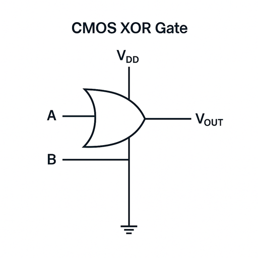
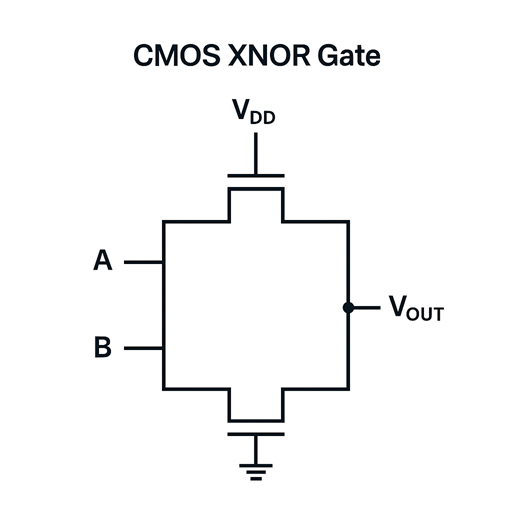

XOR Gate
XNOR Gate

The CMOS XOR gate consists of:
Output is HIGH when inputs are different (A≠B)
The typical Wp/Wn ratio for a symmetrical CMOS XOR/XNOR gate is approximately 2:1 to compensate for the lower hole mobility in PMOS compared to electron mobility in NMOS.
This is the SPICE netlist for the CMOS XOR gate circuit with the current parameters:
* CMOS XOR Gate SPICE Netlist * Power Supply VDD vdd 0 DC 5V * Input Voltage Sources (for DC sweep) VIN1 in1 0 DC 0V VIN2 in2 0 DC 0V * PMOS Transistors M1 out in1 vdd vdd PMOS W=2.0u L=0.18u M2 out in2 vdd vdd PMOS W=2.0u L=0.18u * NMOS Transistors M3 out in1 0 0 NMOS W=1.0u L=0.18u M4 out in2 0 0 NMOS W=1.0u L=0.18u * MOSFET Model Parameters .MODEL NMOS NMOS (LEVEL=3 TOX=3.5E-9 VTO=0.5 GAMMA=0.2 PHI=0.6) .MODEL PMOS PMOS (LEVEL=3 TOX=3.5E-9 VTO=-0.5 GAMMA=0.2 PHI=0.6) * Analysis Commands .DC VIN1 0 5 0.01 .PRINT DC V(in1) V(in2) V(out) .END

The CMOS XNOR gate consists of:
Output is HIGH when inputs are equal (A=B)
The typical Wp/Wn ratio for a symmetrical CMOS XNOR gate is approximately 2:1 to compensate for the lower hole mobility in PMOS compared to electron mobility in NMOS.
This is the SPICE netlist for the CMOS XNOR gate circuit with the current parameters:
* CMOS XNOR Gate SPICE Netlist * Power Supply VDD vdd 0 DC 5V * Input Voltage Sources (for DC sweep) VIN1 in1 0 DC 0V VIN2 in2 0 DC 0V * PMOS Transistors M1 n1 in1 vdd vdd PMOS W=2.0u L=0.18u M2 out in2 n1 vdd PMOS W=2.0u L=0.18u * NMOS Transistors M3 out in1 0 0 NMOS W=1.0u L=0.18u M4 out in2 0 0 NMOS W=1.0u L=0.18u * MOSFET Model Parameters .MODEL NMOS NMOS (LEVEL=3 TOX=3.5E-9 VTO=0.5 GAMMA=0.2 PHI=0.6) .MODEL PMOS PMOS (LEVEL=3 TOX=3.5E-9 VTO=-0.5 GAMMA=0.2 PHI=0.6) * Analysis Commands .DC VIN1 0 5 0.01 .PRINT DC V(in1) V(in2) V(out) .END